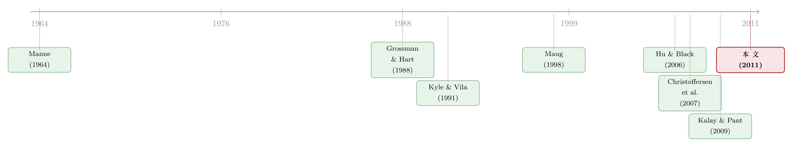

投错票的人，反而把治理变好了？——给“空洞投票”算一笔效率账
本文读的是 Brav & Mathews (2011, Journal of Financial Economics)：当一个掌握私有信息的战略交易者（比如对冲基金）能把"手里的股份"和"手里的票"拆开来持有时——这就是所谓的空洞投票 (empty voting)——它有时确实会甩成净空头、然后投票去砸公司价值。但作者用一个三期模型证明：正因为它带来了别人没有的信息，又被记录日的多头仓位"拴住"了手脚，它投对票的概率高于投错，于是整体效率反而可能提升。空洞投票究竟是帮凶还是良药，取决于一个关键参数：在记录日把票和股拆开，到底有多便宜。
1 一桩"反向投票"的丑闻
先讲一个真实的故事。
香港有家公司叫恒基地产（Henderson Land），想把旗下一家上市子公司——恒基发展（Henderson Investment）——剩下 25% 的少数股权买下来，为此要开股东会投票。一只对冲基金在记录日前借入了大量股票，于是攥着一把投票权出现在投票名单上。它做了什么？它投票反对这个买断方案——然后从一个空头头寸里获利：方案被否、股价随后下跌，它赚走了价差。
读到这里，任何人的直觉都是一样的：这是赤裸裸的操纵。这只基金根本不在乎公司值多少钱，它甚至希望公司变得更糟，因为它的钱押在股价下跌那一边。它手里的票，是一张和经济利益彻底脱钩的"空票"。Hu 和 Black（2006, 2007）正是用一系列这样的案例，把 empty voting（空洞投票）这个词带进了学术与监管的视野——投票权被刻意累积到超过经济所有权之上，用来操纵投票结果、赚取交易利润。即便"一股一票"是白纸黑字的规则，这件事照样能通过借券、或在衍生品市场对冲掉经济敞口来实现。
监管者坐不住了。SEC 主席 Christopher Cox 在 2007 年对《华尔街日报》说，空洞投票"几乎肯定会迫使监管做出进一步回应……这已经是个严重的问题，而且正显示出愈演愈烈的所有迹象"。顺理成章的政策处方是：加强披露，把这种把戏曝光在阳光下。
故事到这里，结论似乎已经写好了：空洞投票 = 操纵 = 坏事 = 该管。
可这篇论文偏要问一句：真的吗？
2 把"投票"和"下注"拆开看
要回答这个问题，得先把直觉里那团模糊的东西拆开。一只对冲基金参与投票，其实同时在做两件事：一是投票（影响公司决策），二是下注（在股价上建立头寸赚钱）。我们觉得它"坏"，是因为在恒基那个案例里，这两件事指向了相反的方向——它一边投票否决，一边做空获利。
但作者的洞察是：这种"指向相反"并不是空洞投票的必然结局，而只是它众多可能策略中的一种。要看清整体效率，就不能只盯着这一个坏案例，而要把这个战略交易者最优地会怎么选仓位、怎么投票，从头到尾推一遍。
于是有了模型。一家公司，一张完全可分割的股票。所有人都风险中性，贴现率为零。玩家有四类：设置议案的管理层（不持股、不投票）、一个战略交易者（下称 H，可以是对冲基金）、一个做市商 (market maker)、以及一群原子化股东 (atomistic shareholders)。
管理层在 time 0 提出一项需要股东表决的议案。议案有好有坏，而且此刻没人知道好坏：
$$ \text{Firm value} = \begin{cases} v + \Delta v & \text{good proposal, approved}\\ v & \text{good proposal, defeated}\\ v - \Delta v & \text{bad proposal, approved}\\ v & \text{bad proposal, defeated} \end{cases} $$
也就是说，好议案通过了加 Δv、被否则维持 v；坏议案通过了减 Δv、被否同样维持 v。效率的含义因此非常干净：好议案应当通过、坏议案应当被否，凡是把这两件事做反的投票结果，都是效率损失。
接着，一个自然的问题是：H 凭什么能影响这场投票？模型给了它两样武器。
第一样：在记录日之前买卖股票。 在 time 0 到记录日（time 1）之间，市场是透明的——没有噪声交易，做市商和 H 信息对称，成交价就等于股票的期望价值。H 可以在这里买入或卖出，建立自己的经济仓位 a_H。
第二样：花钱单独买"票"。 H 还能在经济所有权之外额外购入投票权 a_X，代价是一个递增且凸的成本函数：
$$c(a_X) = \max\big[0,\ (a_X - \underline{a}_X)K\big]$$
这个设定很巧：额外投票权在 a̲_X 之前是免费的，超过 a̲_X 之后因为 K 极大而变得贵到不可能。它刻画的是借券市场的现实——找头几个愿意借票的股东很容易（边际成本近乎零，Christoffersen 等人 2007 也发现"投票权在借券市场的平均售价为零"），但要借到足以左右大局的量，搜寻成本会陡然飙升（Kolasinski、Reed、Ringgenberg 2008 的借券供给曲线正是"低位平、高位陡"）。a̲_X 这个参数，就成了"把票和股拆开有多便宜"的刻度。
于是，记录日那天，谁手里有多少票就定下来了：
a_X 这一块——votes 与 economic ownership a_H 之间的那道楔子——就是"空洞投票"四个字的全部数学含义。
3 真正关键的一步：记录日之后的"两条岔路"
记录日把票数锁死了，但故事还没完。这正是美国治理制度的一个现实细节，也是全文的发动机：记录日和真正投票那天之间，隔着很长一段时间。Christoffersen 等人（2007）发现这个时滞中位数高达 54 个日历日。而议案公告到记录日之间的窗口却很短。
作者把这一现实写进了模型：记录日之后（time 1 到 time 2 之间），H 不能再改投票权，但可以继续调整经济仓位，而且会在某个时点学到议案到底是好是坏（学到的时点在记录日前后都行，不影响分析）。更重要的是，这段时间市场不再透明——会有一个流动性冲击带来噪声交易 (noise trading)：以 1/2 的概率，一部分比例为 a̲_Z 的原子化股东被冲击击中、被迫抛售。
噪声一旦出现，H 就有了藏身之所。在投票日（time 2），H 会按自己净经济仓位所决定的利益去投票，而原子化股东的投票则近似随机。
现在，反转的引信被点燃了。H 在记录日之后会怎么走？作者证明它玩一个混合策略，面前有两条岔路：
- 岔路一（投对票）：再买入更多股票、把自己变成更大的多头，然后投票去最大化公司价值；
- 岔路二（投错票）：卖出、甚至甩成净空头，然后投票去最小化公司价值——这正是恒基故事里发生的事。
恒基案例之所以刺眼，是因为我们只看到了岔路二。但 H 是否更可能走岔路一，取决于它在记录日选了一个多大的多头仓位。而这里藏着全文最精妙的一环——承诺效应 (commitment effect)。
H 在选择记录日的经济仓位 a_H 时，面对一个微妙的权衡。多持一点经济仓位，好处是抬高自己的投票分量（当额外买票很贵时尤其值钱）；坏处却有两条。其中第一条就是承诺效应：记录日持有的那份经济仓位，会让"未来的自己"在投票日也开始在意公司价值本身——因为公司变糟，自己手里这块存量也跟着缩水。这就削弱了它日后翻脸做空、砸盘获利的动机。换句话说，记录日的多头仓位，是 H 给自己戴上的一副"投对票"的镣铐。
正因为这副镣铐，H 在均衡里"投对票"的频率，会高于"投错票"。恒基那种结局只是分布的一条尾巴，而不是中心。
4 反转：操纵者，反而把效率提上去了
把这两层拼起来，结论就浮出水面了。
H 是模型里唯一掌握私有信息的人——它知道议案的好坏，而原子化股东和做市商都不知道。于是它带进系统里的，不只是操纵的可能，还有信息。当承诺效应足够强、它多数时候站在多头一侧投对票时，这份独家信息就被注入了最终的投票结果，让"正确的决定"更容易发生。
作者的基准结论是：当其他股东的投票与正确决定的相关性不高时，或者当在记录日把股和票拆开非常困难（a̲_X 小）时，战略交易者的存在对整体效率是好的——哪怕它有时确实在搞价值毁灭。直觉是：如果别人本来就常常投错，那么 H 那份"多数时候投对"的信息就珍贵；如果拆票很贵，H 只能靠加大记录日多头来攒投票分量，于是承诺效应被绑得更紧，它就更倾向于投对。而且，市场深度越大，H 最优的记录日多头就越大，这股正向效应也越强。
这里还埋着一个漂亮的副产品：既然 H 之所以愿意买票、买股，全是冲着记录日之后那点交易利润去的，那么没有噪声交易，H 根本不会入场。于是在这个模型里，平时被视作市场"杂质"的噪声交易，反而提高了投票效率——它是 H 愿意去搜集信息、参与治理的前提。
绕了一大圈，那桩看似纯粹的操纵丑闻，被放回完整的均衡里之后，竟然指向了一个反直觉的净效果：允许战略交易者赚交易利润、允许它把票和股拆开，可以通过让"对的结果"更可能发生，而提升整体效率。
5 但别急着替它翻案——那条决定成败的分界线
如果文章到此为止，那它不过是给空洞投票唱了首赞歌。真正让这篇论文站得住的，是它同样诚实地画出了反向的另一半。
作者接着证明：当其他股东的投票已经足够偏向正确决定、并且在记录日拆票又不太贵（a̲_X 较大）时，效率会被战略交易者拉低。逻辑是这样的：拆票越便宜，H 就越不需要靠加大记录日多头来攒票——于是它选一个更小的多头仓位，承诺效应被削弱。镣铐一松，它日后甩成净空头、投错票的概率就上升了。而当别的股东本来就大概率投对时，H 那些"投错"的票，比它"投对"的票更容易真正改变结局。于是负面效应开始压过正面，哪怕 H 依旧带着有价值的信息进场。
所以全文反复敲打的那个核心只有一句话：
空洞投票是帮凶还是良药，几乎全系于一个参数——在记录日把投票权从经济所有权上剥离，到底有多便宜（a̲_X 的大小）。拆得越难，承诺效应越紧，越偏向提升效率；拆得越易，镣铐越松，越偏向损害效率。
作者还做了一组比较静态：让拆票变得更容易，会促使 H 降低经济所有权（为了避开承诺效应、保住交易利润），这又抬高了它日后走空、投错的概率。但净效应未必为负——因为额外的票同时也增强了 H 左右结果的能力，只要票别太便宜，这份"影响力"的增益可能盖过"更容易投错"的损失；可一旦票便宜到一定程度、别人又足够可能投对，结论就会再次反转回负面。一句话：这是一个处处取决于参数的权衡，而非一边倒的善或恶。
6 这对"加强披露"的处方意味着什么
回到那个最初的政策直觉：把空洞投票曝光在阳光下，不就好了？
模型给出的回答相当微妙，也相当有用。披露记录日的空洞投票仓位——没用。 因为模型里做市商本来就观察得到 H 在那一阶段的所有动作，这个信息早已反映在价格里，再披露一遍是多余的。
但披露记录日到投票日之间经济仓位的变化——会有效，却可能适得其反。 这种披露会削掉甚至抹平 H 本可赚到的交易利润，于是降低它搜集信息、参与投票的意愿。而前面已经讲过：正是这份信息和这份参与，构成了效率改善的来源。所以这条规则的效果只能逐案判断——取决于在那个具体情形里，H 的存在本来是正面还是负面。
作者由此给监管者的总体建议是克制的：在议案价值存在显著不确定性的场合，一刀切地遏制空洞投票，可能是有成本的。这一点对今天仍不过时——散户与机构在代理投票里的角色一直在变（关于谁在认真投票、谁又只是随大流，可参见《散户其实在"投票"，只是我们一直假设他们不在乎》）。
7 文献脉络
把这篇论文放回它生长的那条藤蔓上，才能看清它的位置。
最早的根，扎在"一股一票"该不该是铁律的争论里——这至少可以追溯到 Manne（1964）。到了 1980 年代末，Grossman 和 Hart（1988）、Harris 和 Raviv（1988）把它推向了公司控制权市场的效率分析，但他们关心的是写进公司章程的长期偏离。
另一条藤蔓，是大股东与知情交易如何影响治理：Shleifer 和 Vishny（1986）讲大股东的"用手投票"，Kyle 和 Vila（1991）把噪声交易引入收购博弈，Maug（1998）则刻画了大股东在流动性与控制之间的取舍。这些工作，给本文里"战略交易者在噪声市场中下注"提供了血脉。

真正把"投票权与经济所有权可以短期脱钩"这件事点破的，是 Hu 和 Black（2006, 2007）——他们贡献了"empty voting"这个标签和一连串案例，却没有给出一个能权衡利弊的理论框架。与此同时，Christoffersen、Geczy、Musto 和 Reed（2007）从另一面切入，论证借券市场里的"卖票"可以提升效率——前提是买票方和卖票方利益一致；可这个前提，恰恰在 Hu 和 Black 的案例里反复被违背。一个最接近本文的近作是 Kalay 和 Pant（2009），他们证明在控制权争夺中，通过衍生品分离经济与投票利益能让股东榨取更多剩余。
本文（Brav & Mathews, 2011）就站在这个交叉口上：它和 Kalay-Pant 一样研究借券/衍生品市场带来的短期脱钩，但把镜头从控制权争夺移到了外部人对常规议案的投票，并且内生地推导出战略交易者最优的事前股权与投票仓位——从而第一次给出了一个能定量权衡"信息效率增益 vs. 操纵成本"的整合框架。
8 模型补遗：几个值得讲清楚的设定
为了让上面的逻辑站得稳，这里把模型里几个容易被一带而过、却很关键的设定再点一遍。
原子化股东的投票分布。 他们投"赞成"的总票数等于 Y(1 - max[0,a_H] - a_X)，其中随机变量 Y 在好议案下服从分布 F_G、坏议案下服从 F_B。作者刻意让两者不同，以便允许"其他股东的投票与真实状态相关"。为了可解，又假定二者互为镜像：
$$F_G\!\left(\tfrac12 - Z\right) = 1 - F_B\!\left(\tfrac12 + Z\right)$$
这个镜像条件保证了一个干净的基准——当 F_G = F_B（即股东投票与真实状态零相关）时，分布关于 1/2 对称，H 不持票时议案事前获批的概率恰为 1/2。"其他股东投得对不对"这个在第 4、5 节里反复出现的关键变量，技术上就藏在 F_G 与 F_B 偏离镜像中心的程度里。
求解所依赖的参数假设。 作者在三条假设下求解：流动性冲击的规模 a̲_Z ∈ (0, 1/2)；K 大到足以让 H 不会购买超过 a̲_X 的额外票（即真正约束 H 的是免费额度 a̲_X，而非天价的边际成本）；以及一个保证内点解的 a̲_X < (2 - a̲_Z) / 2(2 + a̲_Z)。这些假设的共同目的，是把全文的张力压缩到我们关心的那个区间里——H 买不到足以"一票定乾坤"的投票权，于是它的多头仓位、承诺效应、与其他股东的相对力量，才共同决定结局。
论文也坦承了几处未正式建模的留白：若 H 带着事前的多头或空头仓位入场，它会天然偏向护盘（初始多头）或砸盘（初始空头）；若管理层的项目质量与其能力或代理问题相关，那么 H 关于项目好坏的信息，就同时成了关于"经理人好坏"的信息——这可能让空洞投票即便在 H 投错票时也带来一点正面效应（更快暴露差经理）。这些都被作者列为"重要的后续方向"。
评论与延伸（Q&A + 研究方向）
(a) 几个可能的疑问
Q：空洞投票，和"投票买卖 (vote buying)"、双层股权 (dual-class) 到底是不是一回事？
不是。双层股权是写进公司章程的长期、制度化的"一股多票"，Grossman-Hart、Harris-Raviv 那一脉研究的就是它。空洞投票是短期的、通过记录日借券或衍生品对冲临时制造出来的票股脱钩，可以在"一股一票"明文成立的公司里照样发生。投票买卖则更接近一种交易形式，本文把它内生进了 H 的最优选择里。
Q：H 明明有时投票砸公司价值，凭什么说它总体提升了效率？
关键在两点叠加：一是 H 握有别人没有的私有信息；二是记录日的多头仓位通过承诺效应把它"拴"在投对票一侧，使它投对的频率高于投错。整体效率是这两股力量与"其他股东投得对不对"的净较量，未必为正、也未必为负——这正是论文的诚实之处。
Q："承诺效应"为什么能成立？持有经济仓位怎么就让 H 更愿意投对？
因为记录日持有的那份存量，让"投票日的自己"也开始在意公司价值——公司变糟，这块存量就缩水。于是 H 翻脸做空、砸盘获利的动机被自身的多头敞口削弱。它相当于在记录日自我设限，提前承诺了一个偏向护盘的姿态。
Q：噪声交易通常被当作市场的"杂质"，这里为什么反而提升效率？
因为 H 买票、买股的全部动机，是记录日之后那点可期的交易利润；而交易利润恰恰来自噪声交易提供的掩护。没有噪声，H 就不会入场，也就不会把它的信息注入投票。所以在这个模型里，噪声是 H 愿意参与治理的前提条件。
Q：这和 Christoffersen 等人 (2007) 的"卖票提效率"有何不同？
他们的机制要求买票方和卖票方利益一致——不愿付费获取信息的股东把票卖给知情方，皆大欢喜。但 Hu-Black 的案例反复表明这个一致性常被违背。本文不预设利益一致，而是内生地推导战略交易者的仓位与投票，从而能同时容纳"提效"与"毁效"两种结局。
Q：那监管者到底该不该加强披露？
分情况。披露记录日的空洞仓位无效，因为做市商本就观察得到。披露记录日到投票日之间的经济仓位变化有效，但可能反伤效率——它抹掉了 H 的交易利润，从而削弱它搜集信息、参与投票的意愿，而那恰是效率改善的源头。论文据此主张：在议案价值高度不确定时，一刀切遏制空洞投票是有成本的。
(b) 几个可能的研究问题与提案
1. 把这套逻辑搬进信用市场：会不会有"空洞债权人"？
【经济故事】债权人在契约豁免、重组方案、债转股等议题上同样要投票，而 CDS 让债权人可以买入债权、却把经济敞口对冲掉，甚至变成净空头——一个"空洞债权人"完全可能投票推动公司走向破产清算来兑现 CDS。Zachariadis 和 Olaru（2010）已朝同时持有债与股的方向起步。本文的承诺效应/记录日机制可以平移过来。【可行性】中。理论上 doable 且新意明确；实证识别难，需要 CDS 持仓与债权人投票/重组结果的匹配数据，公开度低。
2. 实证检验"承诺效应"是否真的存在。
【经济故事】模型给出一个可证伪的预言：拆票越便宜（借券越易），战略交易者越倾向选更小的记录日多头、也越容易事后走空投错。【可行性】中偏低。可用借券市场数据观察记录日前后借券量的异常激增，叠加投票结果与事后价格走势；难点在于"空洞投票"本身极难直接观测，只能靠借券利率、空头利息等代理变量拼凑，识别力有限。
3. 外资持有人与跨境票股脱钩。
【经济故事】跨境持有、ADR、以及不同法域对借券与披露的差异，天然制造了投票权与经济所有权脱钩的温床；外资机构在代理投票中的行为，可能恰好落在本文"其他股东与正确决定相关性"这一关键参数的不同取值上。【可行性】中。需要跨国的机构持仓（如 FactSet/Refinitiv）与代理投票（ISS）数据，识别可借助各国借券成本或披露门槛的制度差异做横截面比较；数据可得，但把"空洞仓位"干净地度量出来仍是主要障碍。
评述者的判断
这篇文章最大的贡献，是把一个被舆论一边倒判了"有罪"的现象，第一次放进了一个能两头说理的均衡框架里。它没有替空洞投票辩护，也没有附和喊打——而是指出整件事的善恶系于一个可度量的参数（拆票成本 a̲_X），并由此把"信息效率增益"与"操纵成本"放到同一杆秤上。这种"既给出正向机制、又老实标出反向条件"的克制，是好理论的标志。承诺效应这一环尤其漂亮：它用 H 自己的经济敞口去内生地约束 H 的投票动机，比任何外部规则都更有说服力。
对识别（在理论语境里即"机制的稳健性"）我有两点保留。其一，原子化股东"近似随机投票"是个强假设——现实中机构股东会跟随 ISS 建议、会协调，一旦他们的投票本身也含有信息或会对 H 的动作做反应，承诺效应的强弱就要重估。其二，模型让 H 的信息是关于"议案好坏"的纯净信号；可如作者自己所言，一旦项目质量与经理人类型相关，整套效率核算都会被改写，而这恰恰是最贴近现实的情形。
我接下来最想看到的，是把这套框架接到数据上：哪怕不能直接观测空洞仓位，能否用记录日前后的借券异动 + 投票结果 + 事后股价，去检验那条核心比较静态——"拆票越便宜、越容易投错"。如果这个符号在数据里站得住，那么这篇 2011 年的纯理论，就真正有了可以指导披露规则的实证骨架。
参考文献
- Brav, A., Mathews, R.D. (2011). Empty voting and the efficiency of corporate governance. Journal of Financial Economics 99(2), 289–307.
- Christoffersen, S., Geczy, C., Musto, D., Reed, A. (2007). Vote trading and information aggregation. Journal of Finance 62(6), 2897–2929.
- Grossman, S., Hart, O. (1988). One share-one vote and the market for corporate control. Journal of Financial Economics 20, 175–202.
- Harris, M., Raviv, A. (1988). Corporate governance: voting rights and majority rules. Journal of Financial Economics 20, 203–255.
- Hu, H., Black, B. (2006). The new vote buying: empty voting and hidden (morphable) ownership. Southern California Law Review 79, 811–908.
- Hu, H., Black, B. (2007). Hedge funds, insiders, and the decoupling of economic and voting ownership: empty voting and hidden (morphable) ownership. Journal of Corporate Finance 13, 343–367.
- Kalay, A., Pant, S. (2009). One share-one vote is unenforceable and sub-optimal. Unpublished working paper, University of Utah.
- Kyle, A., Vila, J. (1991). Noise trading and takeovers. RAND Journal of Economics 22, 54–71.
- Kolasinski, A., Reed, A., Ringgenberg, M. (2008). A multiple lender approach to understanding supply and demand in the equity lending market. Unpublished working paper, University of North Carolina at Chapel Hill.
- Manne, H. (1964). Some theoretical aspects of share voting: an essay in honor of Adolf A. Berle. Columbia Law Review 64, 1427–1445.
- Maug, E. (1998). Large shareholders as monitors: is there a trade-off between liquidity and control? Journal of Finance 53, 65–98.
- Shleifer, A., Vishny, R. (1986). Large shareholders and corporate control. Journal of Political Economy 94, 461–488.
- Zachariadis, K., Olaru, I. (2010). Trading and voting in distressed firms. Unpublished working paper, Northwestern University.